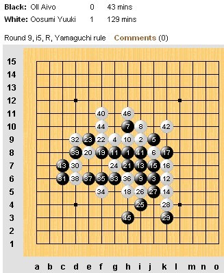
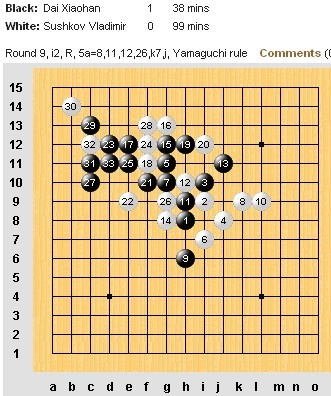
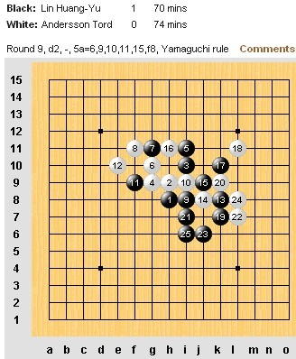
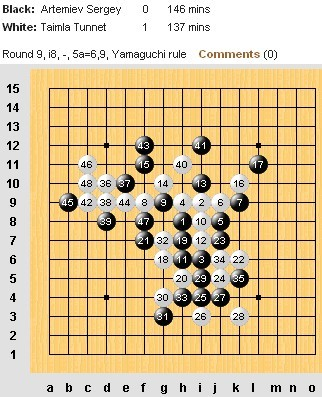
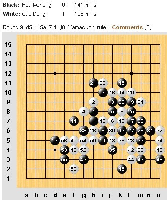
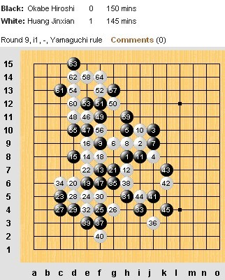

世锦第九轮戴晓涵速胜上届冠军
#1 世锦第九轮戴晓涵速胜上届冠军 作者：蓝天蓝 发表时间：2011-8-10 18:08:40
世锦第九轮戴晓涵速胜上届冠军
作者：通讯员
原文网址链接：http://www.rifchina.com/Article/ShowArticle.asp?ArticleID=6472
第十二届五子棋世界锦标赛A组第九轮，中国选手戴晓涵用时38分钟速胜上届冠军俄罗斯弗·苏切科夫 (Vladimir Sushkov)。中华台北林皇羽轻取瑞典托·安德森 (Tord Andersson)。日本大角友希 (Osumi Yuki)胜爱沙尼亚爱·欧艾沃(Aivo Oll )。中国选手曹冬胜中华台北侯宜呈 (Hou I-Cheng)。爱沙尼亚特·泰姆拉 (Tunnet Taimla)胜俄罗斯谢·阿特米耶夫 (Sergey Artemiev)。 中国选手黄金贤第295分钟取胜日本冈部宽 (Okabe Hiroshi)。
目前前三名都是华人，第十轮比赛将于北京时间晚上九点开始。






#2 Re:世锦第九轮戴晓涵速胜上届冠军 作者：一侠客一 发表时间：2011-8-10 18:09:17
沙发 。。。。。。。#3 Re:世锦第九轮戴晓涵速胜上届冠军 作者：棋界虎哥 发表时间：2011-8-10 18:10:50
板凳
#4 Re:世锦第九轮戴晓涵速胜上届冠军 作者：小元 发表时间：2011-8-10 18:17:59
这都什么时候的新闻了？#5 Re:世锦第九轮戴晓涵速胜上届冠军 作者：傀儡 发表时间：2011-8-10 18:19:22
可以灌灌水。。。。#6 Re:世锦第九轮戴晓涵速胜上届冠军 作者：炫飞冰弦 发表时间：2011-8-10 18:21:55
顺便领十金
#7 Re:世锦第九轮戴晓涵速胜上届冠军 作者：一侠客一 发表时间：2011-8-10 18:23:06
。。。。。。。。。。。。。。。。。。#8 Re:世锦第九轮戴晓涵速胜上届冠军 作者：忧郁的双眼 发表时间：2011-8-10 20:23:56
上届冠军真郁闷了吧